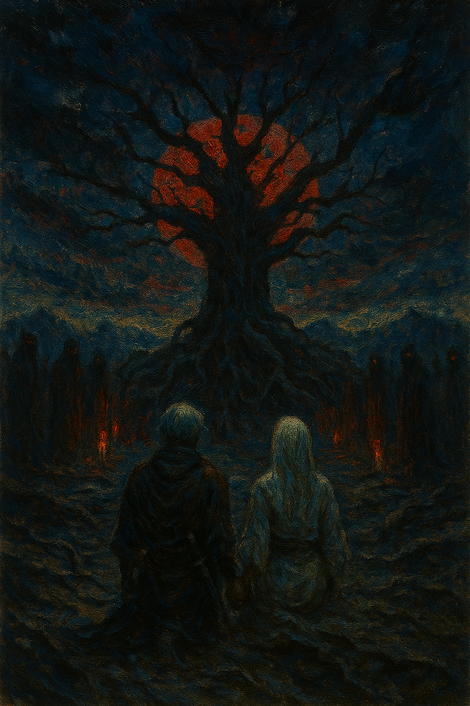
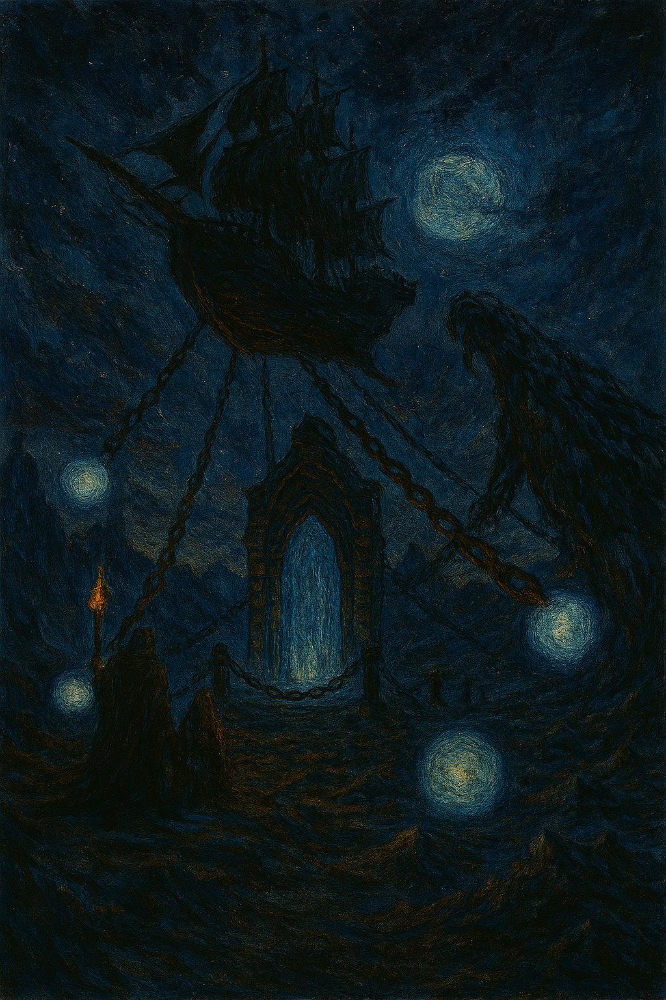
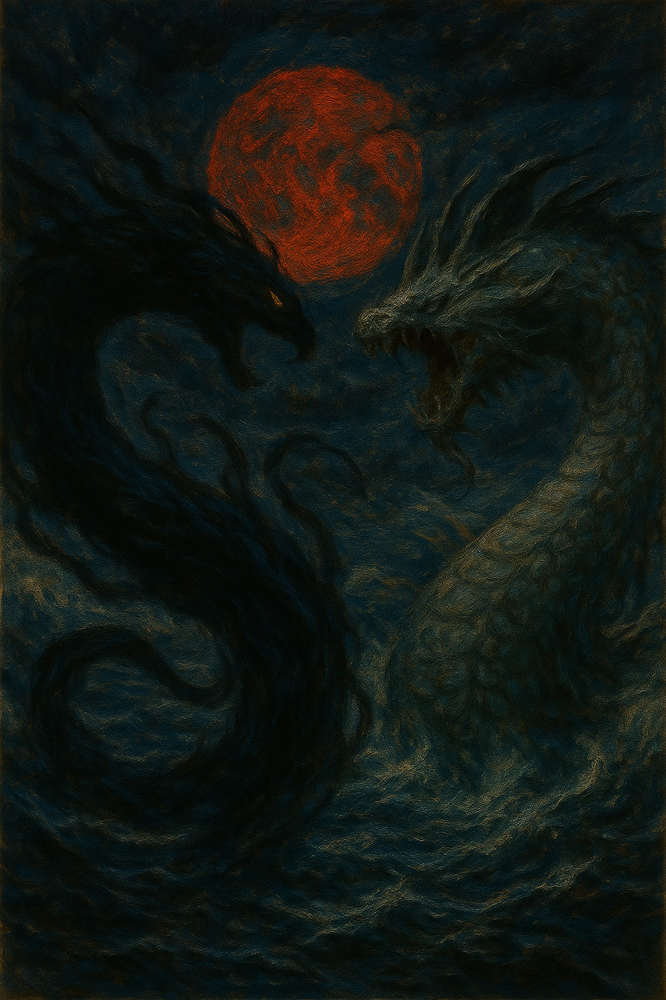

1º Pesadilla

Una vez infectada por el hechizo de pesadilla, esa persona experimentará fatiga y somnolencia constantes y eventualmente caerá en un sueño antinatural, sin signos de despertarse. Cuando los infectados mueren mientras duermen, sus cadáveres se convertirán en monstruos llamados Nightmare Creatures. La Primera Pesadilla es la primera prueba preparada por el Hechizo de Pesadilla para poner a prueba al Aspirante elegido. Las primeras pesadillas son únicas porque cada una de ellas se adapta individualmente. Es por eso que solo puede aparecer una sola criatura. [4] Esta única criatura suele ser una bestia o un monstruo. Rara vez, un demonio se mezcla, y nunca aparece nada más fuerte que un demonio en él. [5]
2º Pesadilla

3º Pesadilla
